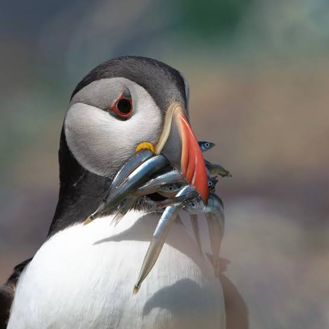

Habitat: Rocky cliffs and islands in the North Atlantic.
Diet: Small fish like herring and sand eels.
Special Feature: Their colorful beaks glow under UV light.
Behavior: Excellent swimmers, using wings to fly underwater.
Threats: Climate change reduces fish populations, affecting breeding success.